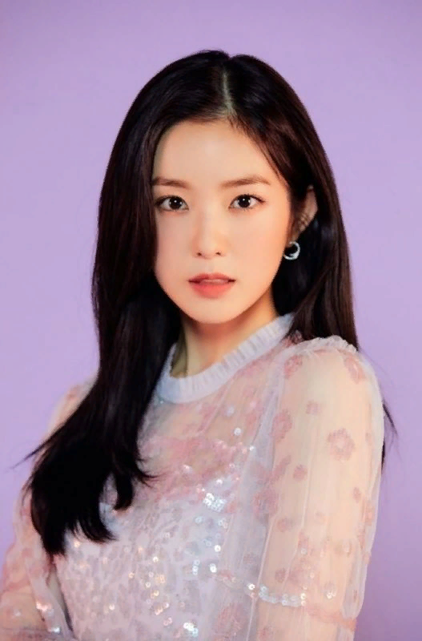
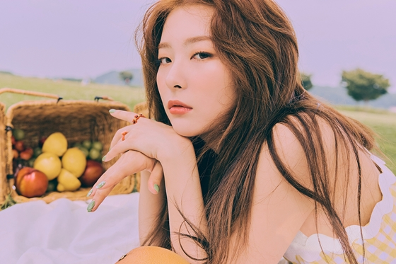

Red Velvet (레드벨벳) -южнокорейская женская группа компании SM Entertainment. Их дебют состоялся
1 августа 2014 года с синглом Happiness. Изначально в группе состояло 4 участницы,Айрин, Сыльги, Вэнди и Джой, но позднее, в марте 2015 года, к ним присоединилась Йери.
Информация об участникахАйрин: реальное имя - Бэ Джухён. Айрин родилась 1 августа 1991
года в Пукку, города Тэгу, Южная Корея. на присоединилась к SM Entertainment в 2009 году и стажировалась в течении 5 лет.
Сыльги:Кан Сыльги родилась в Ансане, Кёнгидо, Южная Корея.
В возрасте 13 лет Сыльги прошла прослушивание в SM Entertainment
и тренировалась в её составе семь лет до дебюта. 